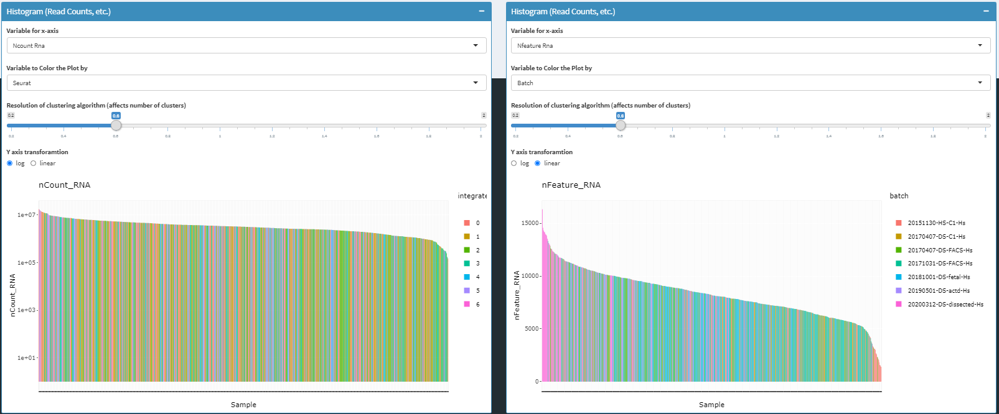
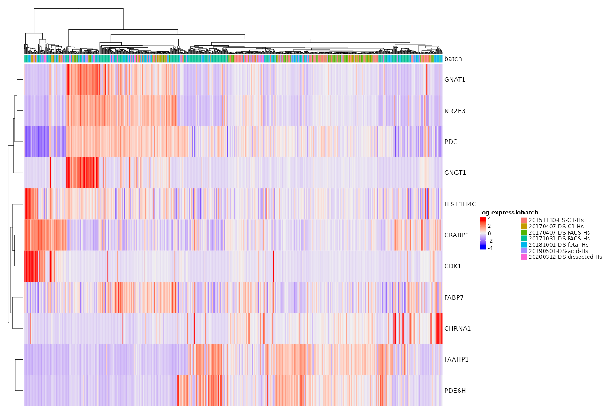
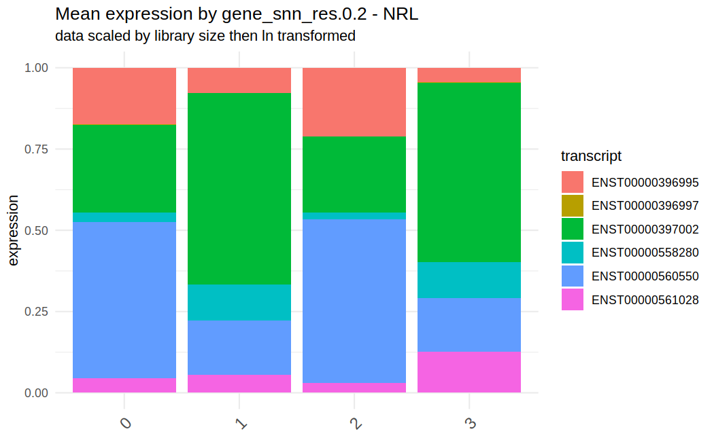

TLDR
Solo Mode
Chevreul allows exploratory data analysis of a single cell dataset
processed using Seurat with the command
minimalSeuratApp()
Server Mode
Chevreul has increased functionality if operating in server mode. These functions include: 1. Coverage plotting 2. Batch integration 3. Project management a. Reformat metadata b. Subset datasets
Here we’ll provide a brief tour of the app organized by section with app functions organized as tabs along the sidebar upon startup.
Integrate Projects
While operating Chevreul in server mode, separate sequencing batches can be integrated and compared to validate sample processing steps and exclude technical variation in favor of relevant biological variation.
This section includes a list of projects that can be selected, integrated, and saved for future analysis.
Reformat Metadata
Arbitrary variables can be appended to the cell metadata based on the results of exploratory data analysis. Metadata addition can be executed by uploading a csv with row names matching cell ids with new variables as columns. Metadata editing can also be accomplished using a built-in spreadsheet tool.
Plot Data
Dimensional reduction plots
chevreul provides visualization of embeddings in PCA, tSNE, and UMAP for scRNAseq data summarized at the gene and transcript level. Plots can be customized to display cell metadata and the results of community detection clustering by Louvain or Leiden algorithms as implemented in Seurat. In addition, gene and transcript feature expression can be overlaid on embedding plots both at the gene and transcript level.

read/UMI count histograms
To facilitate quality control, cell-level summarized umi and read count values can also be overlaid with cell metadata and clustering results.

Clustering trees
A cluster tree of cell identities is displayed using scclustviz. This plot can be used to help establish an optimal clustering resolution.

Heat Maps/Violin Plots
Heat Maps
When plotting the heat map, gene/transcript expression values for each cell are normalized by that cell’s total expression then multiplied by 10,000 and natural-log transformed before plotting.
Clustering model or metadata for column arrangement is taken as a parameter to produce a complex heat map.
By default, 50 most highly variable genes are displayed. However, an arbitrary lists of genes can be plotted for comparison. The genes/transcripts are displayed in the order they are listed.

Violin Plots
Feature (gene or transcript) expression can be viewed by violin plot based on sample metadata
Violin plots are a hybrid of density and box plots. It shows the probability density of the data at different values providing a visual representation of distribution of expression level of a feature in different groups of cell. The horizontal line is a marker for the median of the data and the box shows the interquartile ranges.
The parameters that could to be chosen here are: 1. ‘Grouping variable’ 2. ‘Data Type (Transformed/Raw)’

Coverage plots
Fine-grained analysis of isoform contributions can be achieved by plotting absolute read coverage plots across a given gene.
indicate the **read depths across all transcripts for different groups of cells within a genomic region.
The three user input parameters are: 1. ‘Select a gene’- Select a gene of interest 2. ‘Color by variable’- Select a variable by which to group the cells by 3. ‘Groups to display’- Select the groups to be displayed

Differential expression
Chevreul provides different methods of differential expression analysis that users can choose from to determine differential expression of gene. DE methods included in Chevreul are t-test, Wilcoxon rank-sum test, Likelihood ratio test, and MAST
Running DE testing results in a data frame containing the following information: * p_val : Unadjusted p-value * avg_log2FC : log fold-change of the average expression between the two groups. * pct.1 : The percentage of cells where the feature is detected in the first group * pct.2 : The percentage of cells where the feature is detected in the second group * p_val_adj : Adjusted p-value, based on bonferroni correction using all features in the dataset.
d1<-read.csv("Dominic.csv", header = TRUE)Find Markers
Marker features based on louvain/leiden cluster identities or cell metadata can be defined based on results of wilcoxon rank-sum test via presto or measures of cluster specificity with genesorteR (Ibrahim, 2020) . Variable numbers of marker genes per cell group can be specified based on adjusted p value and thresholded log fold change.

Subset Seurat Input
It is often useful to subset a single cell data set based on cell metadata whether experimentally determined (age, collection method, etc.) or derived from analysis (quality control metrics, annotated cell type)
chevreul makes it simple to subset a dataset consisting of a single batch or batch-integrated dataset. Subsetting can be accomplished either in a graphical setting by lasso-selection from a dimensionally reduced plot or by by specification of a formatted .csv file.
Subsetting of single or batch integrated data will trigger renewal of all relevant preprocessing steps including dimensional reduction, clustering, marker gene, and pathway enrichment as well as integration based on a ‘batch’ variable
All Transcripts
If expression is summarized with both gene and transcript assays, it is possible to plot all constituent transcripts (labeled by ensembl transcript ids) making up a given gene.
The two parameters that must be chosen are:
- dimensional reduction method: PCA, UMAP or tSNE
- The name of the gene of interest

Direct comparison of the contribution of individual transcripts can be achieved using stacked bar plots to answer the question: What contribution does each transcript make for each gene expression?

RNA Velocity
RNA velocity can be used to forecast the future state of a given cell in a developmental or time-dependent process. Chevreul provides visualization and processing functionality using velocyto. Velocity can be represented on UMAP or tSNE plots in multiple formats and exported as needed.
RNA velocity necessitates the calculation of spliced and unspliced transcript counts as implemented on the command-line in velocyto. As a result integration within Chevreul demands some familiarity with the command-line and the availability of a properly formatted loom file. To enable plotting of RNA velocity, the path to the corresponding loom file must be provided.

Pseudotime Analysis by Monocle 3
Pseudotime analysis is broken into several steps, mirroring a typical command-line workflow. 1. Users can subset an embedded dataset then calculate a trajectory graph. 1. Root cells can be specified and cells ordered in pseudotime with monocle3. 2. Features that vary significantly over pseudotime based on autocorrelation can then be determined and grouped into modules that vary similarly over pseudotime.

Heat maps and scatter plots are available at gene and module levels.

Regress Features
To correct for expression variation in analysis due to phenomena unrelated to focus of the study, rather than excluding count values attributable to such process, we can adjust the expression of all remaining genes or transcripts in each cell based on the sum score of relevant genes, to regress out cell-cycle effects, for example
Such regression can be performed for any arbitrary gene set. Some
preset gene lists are included in Chevreul including
cell-cycle, mitochondrial, and apoptosis related gene sets.